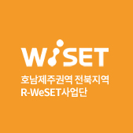

찾아오시는 길 Regional-Women Empowerment in Science,
Engineering & Technology

전라북도 군산시 대학로 558번지
군산대학교 공과대학
5호관 8208호
군산대학교 공과대학
5호관 8208호
Tel. 063-469-4867
Fax. 063-466-4867
Email. wiset@kunsan.ac.kr
- 대중교통
- 터미널에서 시내버스 이용(약 1시간 소요)
- (세빌스 호텔 승강장) 7번 이용하여 한국산업단지공단 승강장에 하차
- (도로 반대쪽 승강장) 9번 이용하여 한국산업단지공단 승강장에 하차 - 터미널에서 택시이용 : 약 36분 소요. 금액은 약 22,000원 정도
- 역전에서 시내버스 이용 : 7번 이용하여 한국산업단지공단 승강장에 하차
- 약 1시간 30분 정도 소요
- 역전에서 택시이용 : 약 33분 소요. 금액은 약 27,000원 정도
- 군산 시내버스 : http://its.gunsan.go.kr | 전화번호 : 063-443-3077
- 군산 시외버스터미널 : http://www.gunsan.go.kr | 전화번호 : 063-442-0747
- 자가용
- 호남고속도로 : 전주IC에서 1시간 정도 소요
- 서울에서 2시간 40분, 광주에서 호남고속도로나 국도를 이용할 경우 1시간 40분
- 대전에서는 1시간 55분 소요
- 서해안 고속도로 : 동군산IC에서 25분 정도 소요, 군산IC에서 35분 정도 소요
- 서울에서 2시간 50분, 광주에서 1시간 30분, 대전에서 1시간 50분 정도 소요